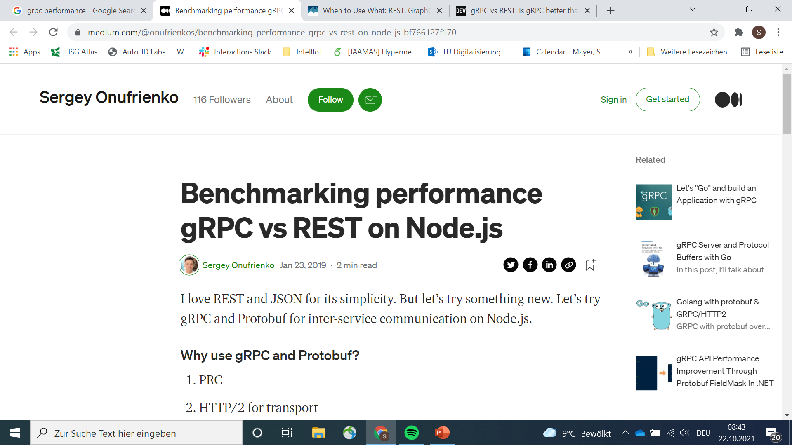
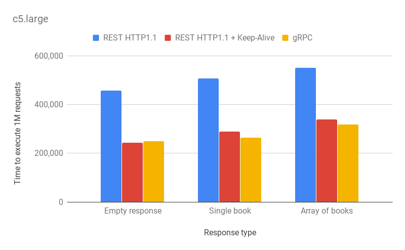
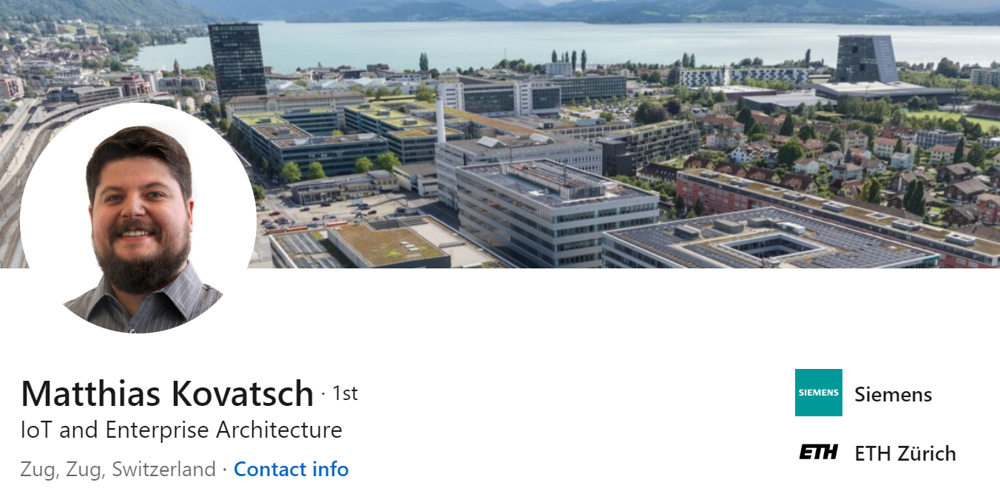
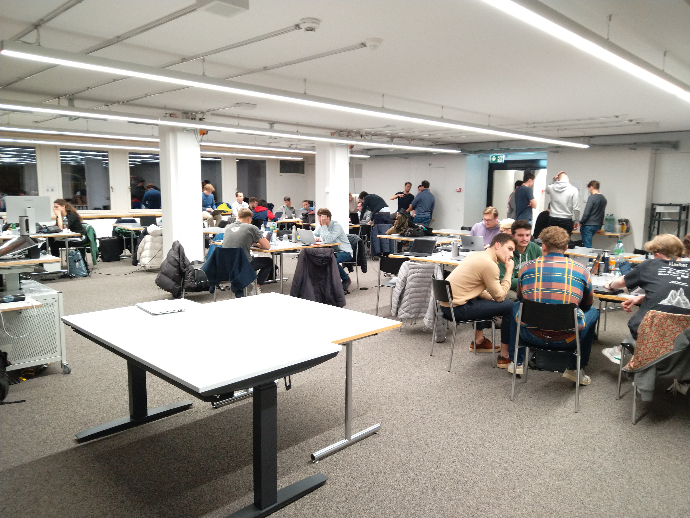
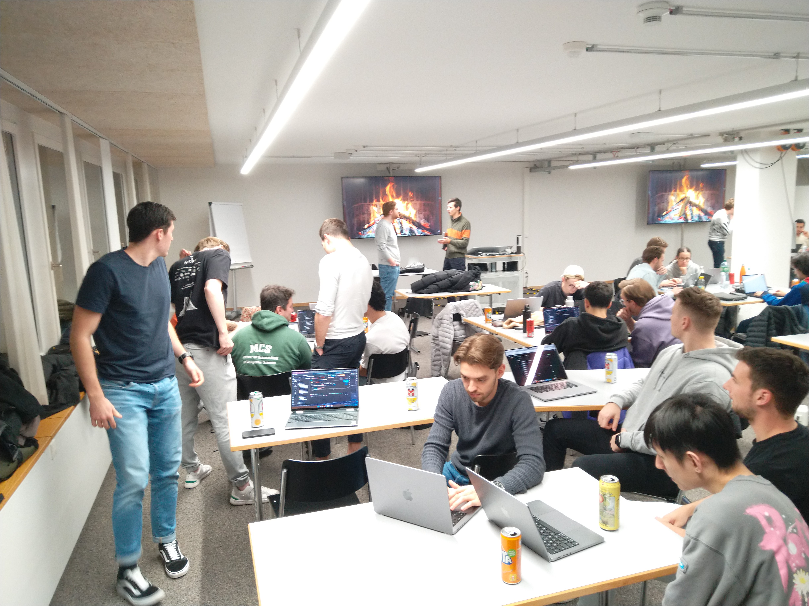
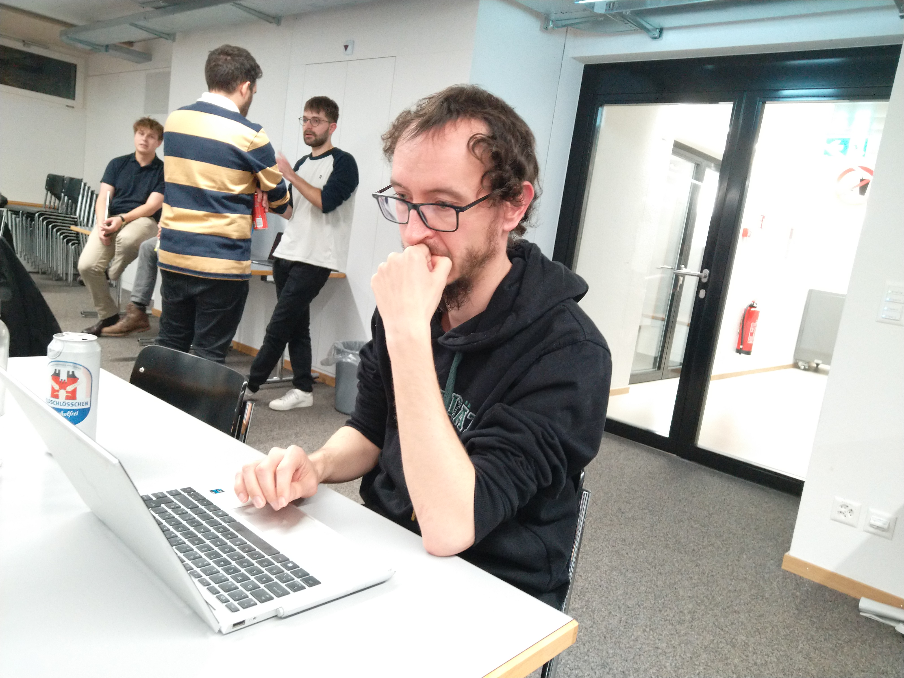
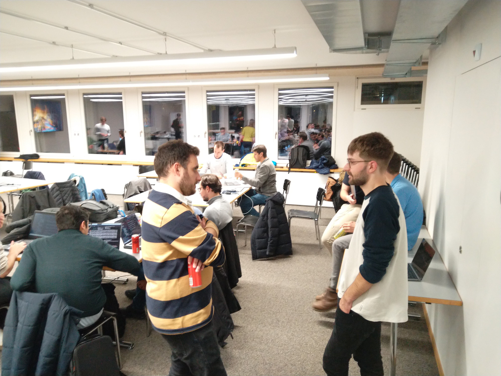
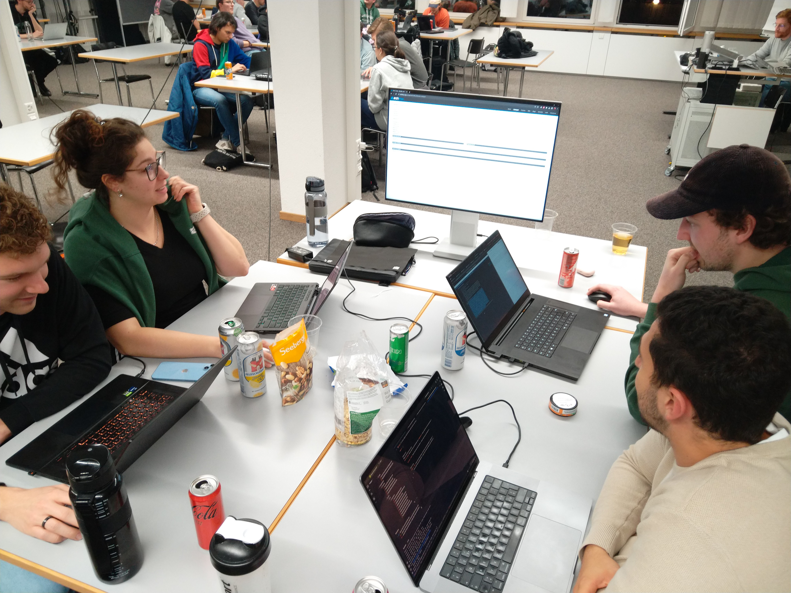
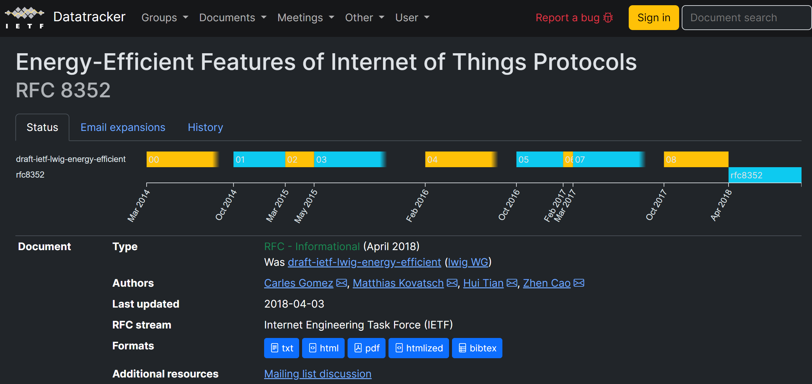

Welcome and Introduction
ASSE Reloaded
Simon Mayer, Alessandro Giugno, Luka Bekavac
University of St.Gallen
Master in Computer Science
Advanced Software and Systems Engineering (7,856)
From insight to impact.
Overall Goal: Precision
From Software to Systems


This doesn’t compare apples to oranges… it compares apples to yaks
As the architect of a (distributed) (information) system, you should use terminology in a clear and well-founded way. Your definitions should be based on accepted expert sources.
This is relevant as our (technology) world needs to be based on clearly-communicated facts, not on obfuscated beliefs.

«Asynchronous», what is that?
Advanced Software and Systems Engineering | Institute of Computer Science | University of St.Gallen
Lecture Learning Goals
From Software to Systems
Lecture 1: Understand how you may select fitting architectural constraints to achieve a desired non-functional profile
Assignment 1: Uniform Interaction? Exploring the REST Architectural Style
Lecture 2: Understand how you may select fitting interaction styles to achieve a desired non-functional profile
Assignment 2: What Interaction Style? Event-based Interaction using MQTT and W3C WebSub
Lecture 3: Understand ecological interaction between hosts beyond individual requests
Assignment 3: Where to Couple? Decentralization and Informed Discovery
Lecture 4: Understand that decoupling may happen on many levels beyond the immediate API
Assignment 4: Multi-level Decoupling? Decoupling through Semantic Hypermedia
Lecture 5: Understand what changes when higher autonomy potential and constrained devices enter the game
Assignment 5: Autonomy and Interactions with Constrained Devices
Plugfest with Pitas (Dec 2, from 4:30pm)

Advanced Software and Systems Engineering | Institute of Computer Science | University of St.Gallen
What’s with that PlugFest?
From Software to Systems
Gloriously integrate all groups’ implementations
Experience how interoperability testing is done in practice with your results from Assignment 7 and Assignment 8
Talk to a colleague with >10 years of standardization experience
Socialize and have Pizza (sponsored by Siemens – thank you!)







Plugfest with Pitas (Dec 2, from 4:30pm)
Advanced Software and Systems Engineering | Institute of Computer Science | University of St.Gallen
Any Questions / Comments / Doubts / Concerns?

Advanced Software and Systems Engineering | Institute of Computer Science | University of St.Gallen